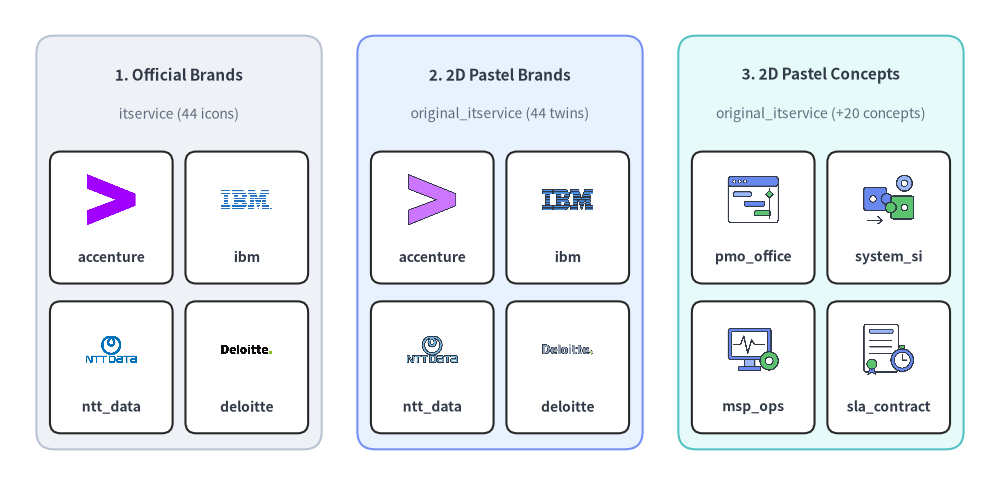
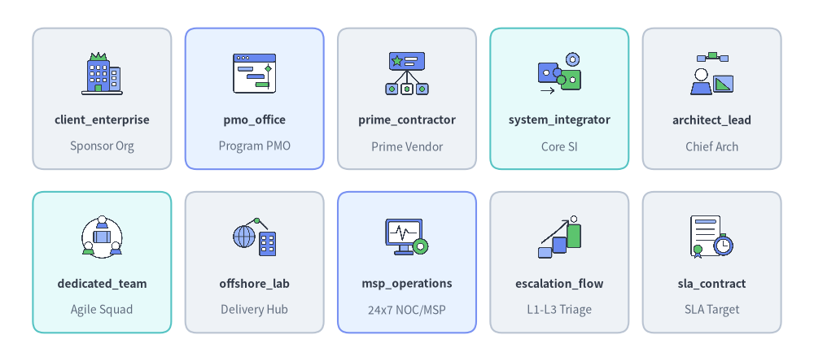
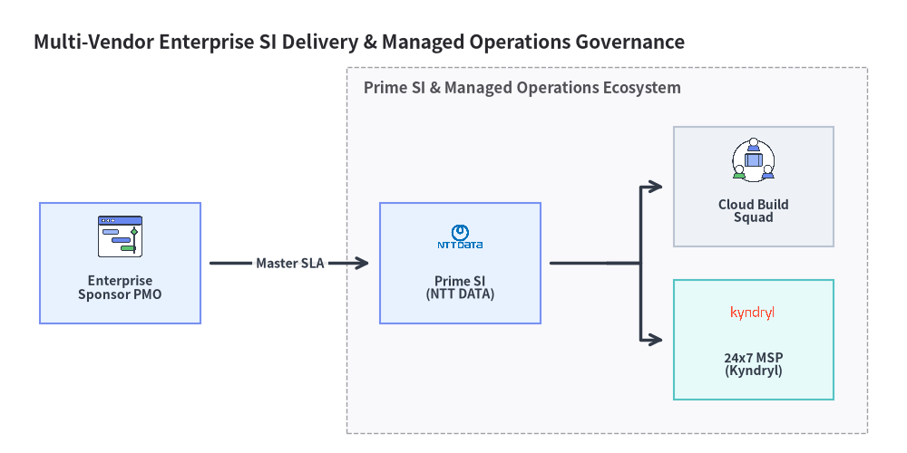

IT Services & Consulting Icons (itservice & original_itservice)
Drawlib provides 44 official consulting and systems integrator brand icons in drawlib.icons.itservice (ItserviceIcon) and 64 flat 2D pastel icons in drawlib.icons.original_itservice (OriginalItserviceIcon — all 44 brand twins plus 20 vendor-neutral ITSM, delivery, and governance concept icons). See the Icons Overview for cross-tier guidelines and Architecture Diagrams for multi-partner topology diagrams.

Source Code
from drawlib.canvas import save, setup
from drawlib.icons import itservice, original_itservice
from drawlib.shapes import rectangle
from drawlib.styles import Styles
from drawlib.text import text
setup(width=140, height=68)
columns = [
(
25.0,
"1. Official Brands",
"itservice (44 icons)",
Styles.Neutral,
[
("accenture", itservice.accenture),
("ibm", itservice.ibm),
("ntt_data", itservice.ntt_data),
("deloitte", itservice.deloitte),
],
),
(
70.0,
"2. 2D Pastel Brands",
"original_itservice (44 twins)",
Styles.PrimaryNeutral,
[
("accenture", original_itservice.accenture),
("ibm", original_itservice.ibm),
("ntt_data", original_itservice.ntt_data),
("deloitte", original_itservice.deloitte),
],
),
(
115.0,
"3. 2D Pastel Concepts",
"original_itservice (+20 concepts)",
Styles.SecondaryNeutral,
[
("pmo_office", original_itservice.pmo_office),
("system_si", original_itservice.system_integrator),
("msp_ops", original_itservice.msp_operations),
("sla_contract", original_itservice.sla_contract),
],
),
]
for cx, title, subtitle, card_style, items in columns:
rectangle((cx, 34.0), width=40.0, height=58.0, style=card_style.patch(shape_r=2.5))
text((cx, 57.5), title, style=Styles.DarkBold.patch(text_size=11.0))
text((cx, 52.0), subtitle, style=Styles.Muted.patch(text_size=10.0))
offsets = [(-9.5, 37.5), (9.5, 37.5), (-9.5, 16.5), (9.5, 16.5)]
sub_style = Styles.White.patch(shape_r=1.5, line_width=0.6)
for (dx, iy), (lbl, fn) in zip(offsets, items, strict=True):
ix = cx + dx
rectangle((ix, iy), width=17.2, height=18.5, style=sub_style)
fn((ix, iy + 2.5), width=8.0, style=Styles.Primary)
text((ix, iy - 5.5), lbl, style=Styles.DarkBold.patch(text_size=10.0))
save()
1. API Signature & Twin Module Structure
The itservice and original_itservice modules form a twin icon pair tailored for enterprise program governance, multi-vendor system integration (SI), managed service provider (MSP) operations, and escalation models:
| Module | Diagram Enum | Canonical Count | Asset Archive | Visual Purpose |
|---|---|---|---|---|
drawlib.icons.itservice |
ItserviceIcon |
44 | icon_itservice |
Official brand marks for global consulting firms, Big Four advisories, and systems integrators (Accenture, IBM, Deloitte, NTT DATA, TCS, Kyndryl, etc.). |
drawlib.icons.original_itservice |
OriginalItserviceIcon |
64 (44 brand twins + 20 concepts) |
icon_original_itservice |
Cohesive flat 2D pastel equivalents of all 44 consulting/SI brands plus 20 vendor-neutral governance and delivery concepts (pmo_office, system_integrator, msp_operations, sla_contract, etc.). |
Every icon function is center-anchored at xy=(cx, cy) with a 1:1 square aspect ratio and accepts Style attributes (alpha, angle, image_tint_color, image_border_*):
from drawlib.diagrams.architecture import ItserviceIcon, Node, OriginalItserviceIcon
from drawlib.icons import itservice, original_itservice
from drawlib.styles import Styles
# 1. Direct canvas rendering (center-anchored at (cx, cy))
itservice.accenture((30, 25), width=9.0, style=Styles.Primary)
original_itservice.accenture((60, 25), width=9.0, style=Styles.Primary)
original_itservice.pmo_office((90, 25), width=9.0, style=Styles.Primary)
# 2. High-level ArchitectureDiagram nodes via Enum tokens
si_node = Node("Prime SI", width=26, height=18, icon=ItserviceIcon.NTT_DATA, icon_size=7.5)
msp_node = Node("24x7 MSP", width=26, height=18, icon=OriginalItserviceIcon.MSP_OPERATIONS, icon_size=7.5)
2. Official & Pastel Brand Icons Showcase & Complete Reference (itservice & original_itservice)
All 44 canonical brand names below are available identically in both drawlib.icons.itservice.<name> (ItserviceIcon.<NAME>) and drawlib.icons.original_itservice.<name> (OriginalItserviceIcon.<NAME>).
Source Code
from drawlib.canvas import save, setup
from drawlib.icons import itservice
from drawlib.shapes import rectangle
from drawlib.styles import Styles
from drawlib.text import text
setup(width=144, height=64)
row1 = [
("accenture", "Global SI", itservice.accenture, Styles.Neutral),
("deloitte", "Advisory", itservice.deloitte, Styles.PrimaryNeutral),
("mckinsey", "Strategy", itservice.mckinsey, Styles.Neutral),
("ibm", "Consulting", itservice.ibm, Styles.SecondaryNeutral),
("kyndryl", "Managed Infra", itservice.kyndryl, Styles.Neutral),
]
row2 = [
("ntt_data", "APAC GSI", itservice.ntt_data, Styles.SecondaryNeutral),
("fujitsu", "Enterprise SI", itservice.fujitsu, Styles.Neutral),
("capgemini", "European GSI", itservice.capgemini, Styles.PrimaryNeutral),
("tcs", "Global Delivery", itservice.tcs, Styles.Neutral),
("thoughtworks", "Digital Eng", itservice.thoughtworks, Styles.Neutral),
]
for row_idx, items in enumerate([row1, row2]):
cy = 46.5 if row_idx == 0 else 17.5
for col_idx, (name, cat, icon_fn, card_st) in enumerate(items):
cx = 18.0 + col_idx * 27.0
rectangle((cx, cy), width=24.5, height=25.0, style=card_st.patch(shape_r=2))
icon_fn((cx, cy + 4.5), width=8.5, style=Styles.Primary)
text((cx, cy - 3.8), name, style=Styles.DarkBold.patch(text_size=10.0))
text((cx, cy - 8.5), cat, style=Styles.Muted.patch(text_size=10.0))
save()
Complete 44 Brand Icons Reference (itservice & original_itservice)
| Category | Count | Canonical Function (itservice.* & original_itservice.*) |
Enum Member (ItserviceIcon.* & OriginalItserviceIcon.*) |
|---|---|---|---|
| Strategy & Big Four Advisory | 9 | accenture, bain, bcg, booz_allen, deloitte, ey, kpmg, mckinsey, pwc |
ACCENTURE, BAIN, BCG, BOOZ_ALLEN, DELOITTE, EY, KPMG, MCKINSEY, PWC |
| Global Systems Integrators & Managed Infra | 12 | atos, capgemini, cgi, dxc, ibm, indra, kyndryl, leidos, rackspace, sopra_steria, t_systems, tietoevry |
ATOS, CAPGEMINI, CGI, DXC, IBM, INDRA, KYNDRYL, LEIDOS, RACKSPACE, SOPRA_STERIA, T_SYSTEMS, TIETOEVRY |
| Japanese & APAC Systems Integrators | 5 | fujitsu, hitachi, nec, nri, ntt_data |
FUJITSU, HITACHI, NEC, NRI, NTT_DATA |
| Global Delivery & IT Services | 7 | cognizant, hcltech, infosys, ltimindtree, tcs, tech_mahindra, wipro |
COGNIZANT, HCLTECH, INFOSYS, LTIMINDTREE, TCS, TECH_MAHINDRA, WIPRO |
| Digital Engineering & Cloud Native Consulting | 5 | endava, epam, globant, slalom, thoughtworks |
ENDAVA, EPAM, GLOBANT, SLALOM, THOUGHTWORKS |
| BPO, Customer Operations & IT Staffing | 6 | adecco, concentrix, genpact, manpower, randstad, teksystems |
ADECCO, CONCENTRIX, GENPACT, MANPOWER, RANDSTAD, TEKSYSTEMS |
3. Vendor-Neutral Concept Icons Showcase & Complete Reference (original_itservice)
In addition to the 44 brand twins above, drawlib.icons.original_itservice (OriginalItserviceIcon) provides 20 vendor-neutral ITSM, consulting, and program governance concept icons for RACI matrices, multi-vendor delivery charts, and SLA escalation workflows.

Source Code
from drawlib.canvas import save, setup
from drawlib.icons import original_itservice
from drawlib.shapes import rectangle
from drawlib.styles import Styles
from drawlib.text import text
setup(width=144, height=64)
row1 = [
("client_enterprise", "Sponsor Org", original_itservice.client_enterprise, Styles.Neutral),
("pmo_office", "Program PMO", original_itservice.pmo_office, Styles.PrimaryNeutral),
("prime_contractor", "Prime Vendor", original_itservice.prime_contractor, Styles.Neutral),
("system_integrator", "Core SI", original_itservice.system_integrator, Styles.SecondaryNeutral),
("architect_lead", "Chief Arch", original_itservice.architect_lead, Styles.Neutral),
]
row2 = [
("dedicated_team", "Agile Squad", original_itservice.dedicated_team, Styles.SecondaryNeutral),
("offshore_lab", "Delivery Hub", original_itservice.offshore_lab, Styles.Neutral),
("msp_operations", "24x7 NOC/MSP", original_itservice.msp_operations, Styles.PrimaryNeutral),
("escalation_flow", "L1-L3 Triage", original_itservice.escalation_flow, Styles.Neutral),
("sla_contract", "SLA Target", original_itservice.sla_contract, Styles.Neutral),
]
for row_idx, items in enumerate([row1, row2]):
cy = 46.5 if row_idx == 0 else 17.5
for col_idx, (name, cat, icon_fn, card_st) in enumerate(items):
cx = 18.0 + col_idx * 27.0
rectangle((cx, cy), width=24.5, height=25.0, style=card_st.patch(shape_r=2))
icon_fn((cx, cy + 4.5), width=8.5, style=Styles.Primary)
text((cx, cy - 3.8), name, style=Styles.DarkBold.patch(text_size=10.0))
text((cx, cy - 8.5), cat, style=Styles.Muted.patch(text_size=10.0))
save()
Complete 20 Vendor-Neutral Concept Icons (original_itservice)
Canonical Function (original_itservice.*) |
Enum Member (OriginalItserviceIcon.*) |
Governance / Delivery Category | Typical Architectural Role |
|---|---|---|---|
architect_lead |
ARCHITECT_LEAD |
Technical Leadership | Principal / enterprise architect, design authority, or technical review board |
bpo_center |
BPO_CENTER |
Managed Operations | Business process outsourcing (BPO) back-office and shared service center |
client_enterprise |
CLIENT_ENTERPRISE |
Stakeholder & Sponsor | Enterprise customer organization, business owner, or executive sponsor |
dedicated_team |
DEDICATED_TEAM |
Delivery Model | Ring-fenced product engineering pod or cross-functional delivery squad |
escalation_flow |
ESCALATION_FLOW |
ITSM & Operations | Tiered L1 -> L2 -> L3 incident escalation and major incident bridge |
it_consulting |
IT_CONSULTING |
Strategy & Advisory | Technology strategy, cloud readiness assessment, and advisory engagement |
joint_venture |
JOINT_VENTURE |
Commercial Structure | Co-invested joint venture (JV) or strategic alliance delivery entity |
msp_operations |
MSP_OPERATIONS |
Managed Operations | Managed Service Provider (MSP) 24x7 SRE, patching, and runbook operations |
offshore_lab |
OFFSHORE_LAB |
Delivery Model | Global delivery center (GDC), nearshore/offshore engineering lab |
org_hierarchy |
ORG_HIERARCHY |
Governance | Reporting structure, department tree, and organizational operating model |
pmo_office |
PMO_OFFICE |
Governance | Program Management Office (PMO) tracking milestones, budget, and risk |
prime_contractor |
PRIME_CONTRACTOR |
Commercial Structure | Primary contracting vendor accountable for end-to-end program delivery |
project_manager |
PROJECT_MANAGER |
Delivery Leadership | Engagement manager, scrum master, or delivery lead |
raci_matrix |
RACI_MATRIX |
Governance | Responsible, Accountable, Consulted, and Informed (RACI) role matrix |
ses_engineer |
SES_ENGINEER |
Technical Staffing | System Engineering Service (SES) resident specialist or embedded engineer |
sla_contract |
SLA_CONTRACT |
Commercial & ITSM | Service Level Agreement (SLA), uptime commitment, and OLA boundary |
staff_augmentation |
STAFF_AUGMENTATION |
Technical Staffing | Flexible specialist capacity integrated into internal engineering teams |
steering_committee |
STEERING_COMMITTEE |
Governance | Executive steering committee and quarterly program review board |
support_operator |
SUPPORT_OPERATOR |
ITSM & Operations | L1/L2 service desk operator, NOC analyst, or incident responder |
system_integrator |
SYSTEM_INTEGRATOR |
Delivery Model | Systems integrator (SI) coordinating multi-vendor platform implementation |
4. Practical Architecture Diagram (ArchitectureDiagram)
The following example combines OriginalItserviceIcon and ItserviceIcon inside ArchitectureDiagram to illustrate an Enterprise Multi-Vendor Program Governance & Managed Operations Topology:
from drawlib.canvas import clear, save, setup
from drawlib.diagrams.architecture import (
ArchitectureDiagram,
ItserviceIcon,
Node,
NodeGroup,
OriginalItserviceIcon,
)
from drawlib.styles import Styles
clear()
setup(width=136, height=68)
d = ArchitectureDiagram(
node_style=Styles.Primary,
node_text_style=Styles.DarkBold.patch(text_size=10.0),
edge_style=Styles.DarkBold,
edge_text_style=Styles.DarkBold.patch(text_size=10.0),
node_card_style=Styles.Neutral,
title="Multi-Vendor Enterprise SI Delivery & Managed Operations Governance",
)
sponsor = d.add(
Node(
"Enterprise\nSponsor PMO",
width=24,
height=18,
icon=OriginalItserviceIcon.PMO_OFFICE,
icon_size=7.5,
card_style=Styles.PrimaryNeutral,
),
xy=(14.0, 24.5),
)
delivery = d.add(
NodeGroup(title="Prime SI & Managed Operations Ecosystem", padding=5.0),
xy=(48.0, 4.0),
)
prime = delivery.add(
Node(
"Prime SI\n(NTT DATA)",
width=24,
height=18,
icon=ItserviceIcon.NTT_DATA,
icon_size=7.5,
card_style=Styles.PrimaryNeutral,
),
xy=(17.0, 20.5),
)
build_pod = delivery.add(
Node(
"Cloud Build\nSquad",
width=24,
height=18,
icon=OriginalItserviceIcon.DEDICATED_TEAM,
icon_size=7.5,
),
xy=(61.0, 32.0),
)
msp_ops = delivery.add(
Node(
"24x7 MSP\n(Kyndryl)",
width=24,
height=18,
icon=ItserviceIcon.KYNDRYL,
icon_size=7.5,
card_style=Styles.SecondaryNeutral,
),
xy=(61.0, 9.0),
)
d.connect(sponsor, prime, label="Master SLA", padding=1.5)
prime.fork([build_pod, msp_ops], at_x=87.0, padding=1.5)
d.draw(xy=(4.0, 4.0))
save()
